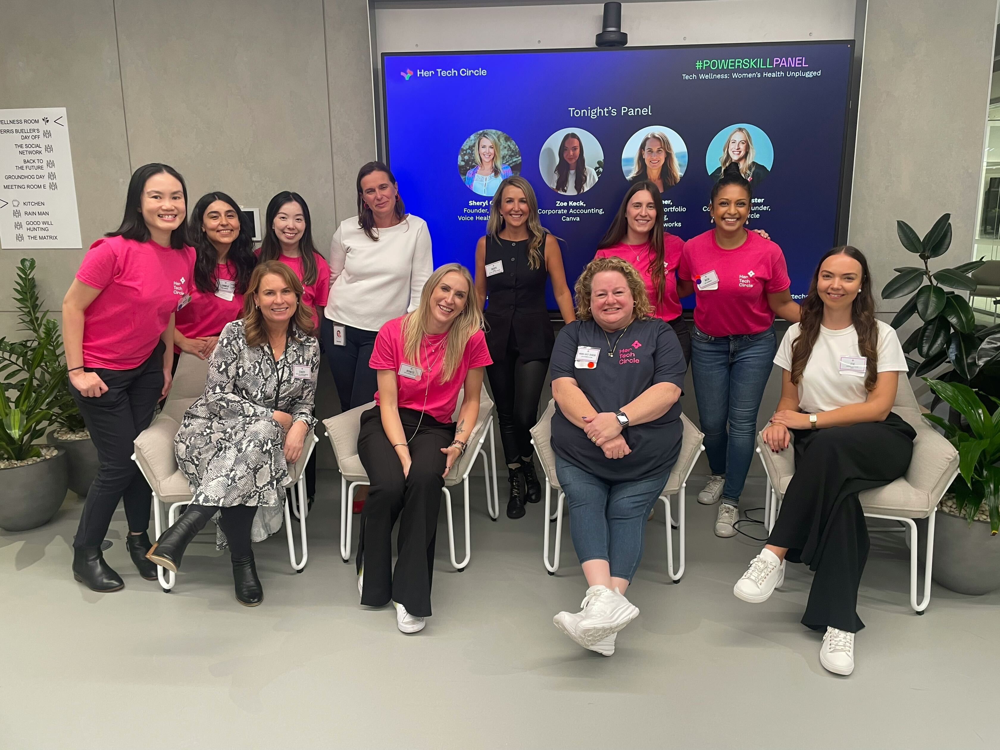

Credentials
Qualified, certified, and still learning.
Formal training in business analysis and web development, the agile certifications to back it up, and an active role in the women-in-tech community.
Education
Where it started
Advanced Diploma of IT Business Analysis
TAFE NSW
Frontend Web Development
TAFE NSW · short course
Backend Web Development
TAFE NSW · short course
Certifications
The agile credentials
Agile Analysis Certification IIBA-AAC
International Institute of Business Analysis
Certified Scrum Master CSM
Scrum Alliance
Certified Product Owner CSPO
Scrum Alliance

Her Tech Circle · #PowerSkill Panel night
Community
An advocate for women in technology.
Beyond the day job, I show up for the people coming up behind me, through the communities that shaped my own path.
IIBABusiness analysis body
Her Tech Circleformerly Girls in Tech Australia
She CodesWomen in tech community